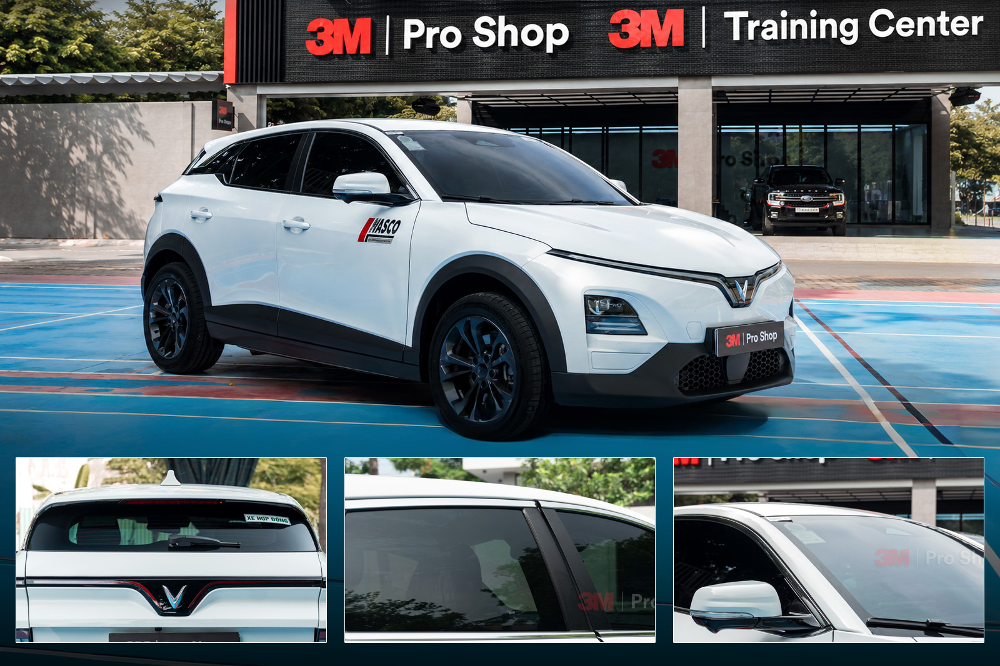
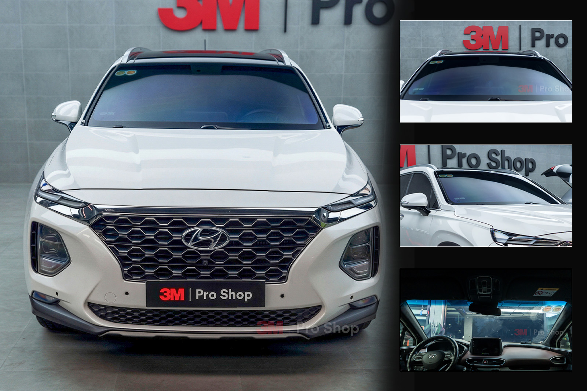
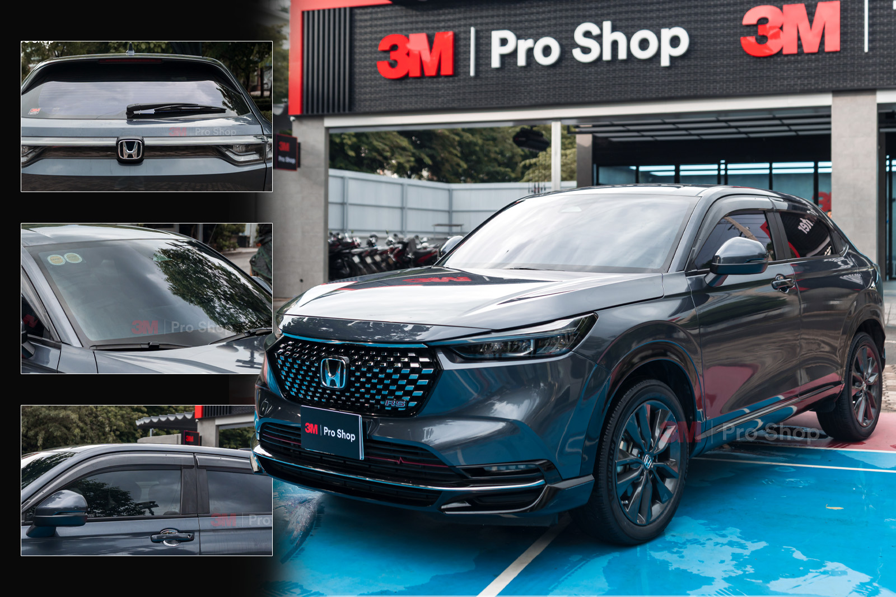
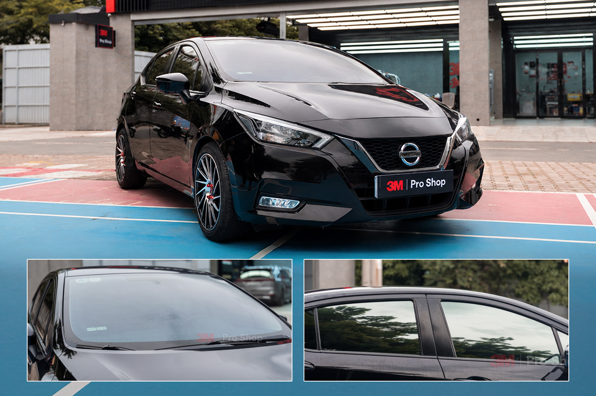
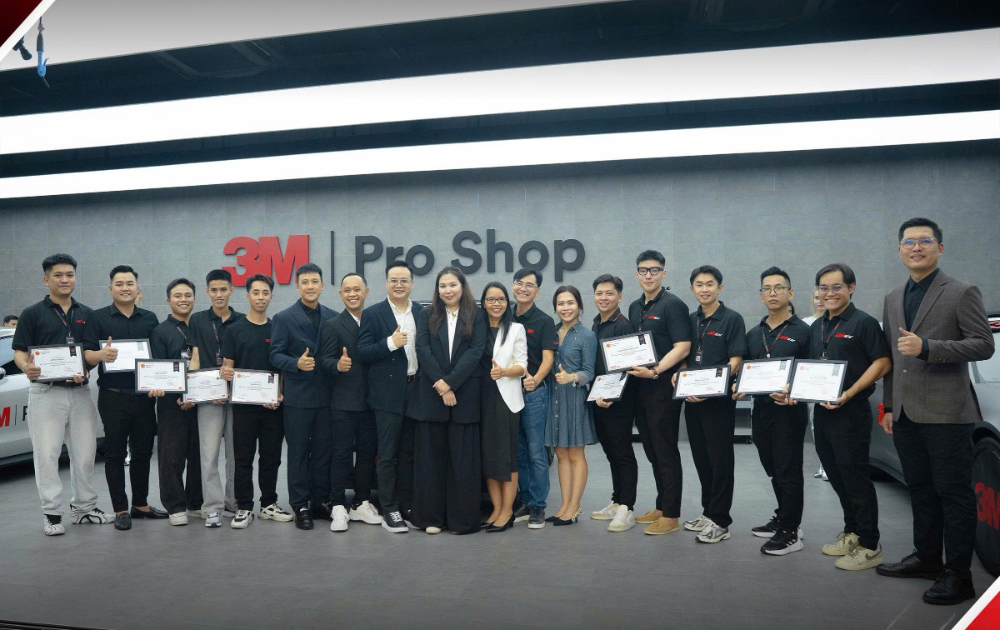

Phim cách nhiệt ô tô 3M Ceramic IR: giá, thông số và cấu hình dán tại Auto365.vn
3M Ceramic IR là dòng phim cách nhiệt ô tô ceramic của 3M, phù hợp với khách hàng cần giảm nóng, giảm lóa, hạn chế tác động của tia UV, tăng riêng tư và giữ tầm nhìn ổn định khi sử dụng xe hằng ngày.
Tại Auto365.vn, 3M Ceramic IR được tư vấn phổ biến với cấu hình IR 50 cho kính lái và IR 25 / IR 15 cho kính sườn, kính giữa, kính lưng. Bài viết này tổng hợp bảng giá, thông số kỹ thuật, cách chọn mã phim theo từng vị trí kính, quy trình thi công, bảo hành điện tử 3M và các lưu ý trước khi dán tại Auto365.vn - Trụ Sở Chính thuộc hệ thống 365Group.
3M Ceramic IR là dòng phim cách nhiệt ô tô ceramic của 3M, được Auto365.vn tư vấn phổ biến với IR 50 cho kính lái và IR 25 / IR 15 cho kính sườn, kính giữa, kính lưng. Theo bảng thông số cập nhật 06/2026, Ceramic IR có TSER 47–59%, VLT 18–58%, UVR 99% và IRR 83–90%, phù hợp khách cần giảm nóng, giảm lóa và giữ tầm nhìn ổn định.
Tư vấn nhanh cấu hình 3M Ceramic IR
Nếu đang phân vân nên dán IR 50, IR 25 hay IR 15 cho xe của mình, Auto365.vn tư vấn cấu hình theo vị trí kính, nhu cầu đi đêm, mức riêng tư và ngân sách thực tế.
1. 3M Ceramic IR là gì?
3M Ceramic IR là dòng phim cách nhiệt ô tô ceramic của 3M, phù hợp với khách hàng muốn cải thiện cảm giác nhiệt trong khoang xe, giảm lóa khi nắng gắt, hạn chế tác động của tia UV và tăng sự riêng tư cho xe. Theo bảng thông số 365Group/Auto365 cập nhật 06/2026, dòng Ceramic IR đang được tư vấn với 3 mã chính gồm IR 50, IR 25 và IR 15.
Trong cấu hình tư vấn tại Auto365.vn, IR 50 thường được dùng cho kính lái vì có độ xuyên sáng cao hơn, hỗ trợ quan sát tốt hơn khi đi phố, đi đêm hoặc đi tỉnh. IR 25 và IR 15 thường được dùng cho kính sườn, kính giữa, kính lưng khi khách cần tăng riêng tư, giảm lóa và giảm nắng cho các vị trí phía sau xe.
Khi chọn phim cách nhiệt 3M Ceramic IR, không nên chỉ nhìn một chỉ số riêng lẻ như IRR. Chủ xe nên xem đồng thời TSER, VLT, UVR, Glare Rejection, IRR, vị trí kính, nhu cầu quan sát, thói quen đi đêm, mức độ riêng tư mong muốn và điều kiện sử dụng xe thực tế.
2. Ưu điểm chính của phim cách nhiệt 3M Ceramic IR
2.1. Hỗ trợ giảm nóng trong khoang xe
Nhờ thông số TSER 47–59% tùy mã phim, 3M Ceramic IR hỗ trợ giảm cảm giác nóng khi xe đậu ngoài trời hoặc di chuyển dưới nắng. Cụ thể, IR 15 có TSER 59%, IR 25 có TSER 57% và IR 50 có TSER 47%.
Hiệu quả thực tế còn phụ thuộc loại kính nguyên bản, diện tích kính, hướng nắng, thời gian phơi nắng, màu nội thất, điều kiện lưu thông và cách sử dụng điều hòa trên từng xe. Vì vậy, Auto365.vn tư vấn cấu hình theo xe thật và nhu cầu sử dụng thực tế, không tư vấn theo một chỉ số duy nhất.
2.2. Giảm lóa khi chạy xe dưới nắng
3M Ceramic IR có tỷ lệ giảm lóa khác nhau theo từng mã phim: IR 15 đạt 78%, IR 25 đạt 65% và IR 50 đạt 32%. Mã phim càng tối thường cho cảm giác giảm lóa và riêng tư hơn, nhưng cũng cần cân nhắc khả năng quan sát trong điều kiện thiếu sáng.
IR 15 và IR 25 phù hợp cho kính sườn, kính giữa, kính lưng khi khách cần tăng riêng tư và giảm lóa mạnh hơn. IR 50 sáng hơn, phù hợp kính lái vì cần giữ tầm nhìn ổn định khi đi phố, đi đêm hoặc đi tỉnh.
2.3. Chống tia UV 99%
3M Ceramic IR hỗ trợ loại bỏ tia cực tím với chỉ số UVR 99% theo bảng thông số 365Group/Auto365 cập nhật 06/2026. Điều này giúp hạn chế tác động của tia UV lên da, taplo, ghế, chi tiết nhựa và nội thất xe.
Chỉ số UVR cần được hiểu là thông số kỹ thuật tham khảo theo điều kiện đo, không nên diễn giải thành các cam kết tuyệt đối hoặc thay thế các biện pháp bảo vệ khác khi sử dụng xe dưới nắng lâu.
2.4. Hỗ trợ loại bỏ tia hồng ngoại
Ceramic IR có IRR 83–90% tùy mã phim. Trong đó, IR 15 và IR 25 có IRR 90%, còn IR 50 có IRR 83%. Đây là nhóm chỉ số giúp khách hàng dễ hiểu hơn về khả năng hỗ trợ giảm cảm giác nóng do bức xạ hồng ngoại.
Khi tư vấn, Auto365.vn giải thích IRR cùng với TSER và VLT. IRR cao không đồng nghĩa với việc xe sẽ mát tuyệt đối trong mọi điều kiện, vì cảm giác nhiệt còn chịu ảnh hưởng bởi kính nguyên bản, diện tích kính, hướng nắng, thời gian đậu xe và điều kiện sử dụng thực tế.
2.5. Thiết kế không chứa kim loại, hạn chế ảnh hưởng tín hiệu
3M Ceramic IR có thiết kế không chứa kim loại. Theo tài liệu 3M, cấu trúc này được thiết kế để hạn chế ảnh hưởng đến tín hiệu điện tử như GPS, điện thoại và các thiết bị kết nối.
Trải nghiệm thực tế còn phụ thuộc thiết bị, dòng xe và vị trí kính. Sau khi thi công, Auto365.vn kiểm tra lại tín hiệu, camera và cảm biến nếu xe có các hệ thống cần vùng quan sát ổn định.
3. Bảng thông số kỹ thuật 3M Ceramic IR
| Mã phim | TSER | VLT | UVR | Giảm lóa | IRR |
|---|---|---|---|---|---|
| IR 15 | 59% | 18% | 99% | 78% | 90% |
| IR 25 | 57% | 30% | 99% | 65% | 90% |
| IR 50 | 47% | 58% | 99% | 32% | 83% |
Dữ liệu được hiển thị là hiệu suất ước tính của phim khi dán lên kính ô tô màu xanh lá cây dày 1/4 inch, tương đương 6 mm, với VLT 73%. Dữ liệu chỉ để tham khảo. Thông số dựa trên bảng kỹ thuật phim cách nhiệt 3M, 365Group/Auto365, cập nhật 06/2026.
- TSER là tỷ lệ tổng năng lượng mặt trời bị loại bỏ. Chỉ số càng cao thì khả năng hỗ trợ giảm nhiệt càng tốt.
- VLT là độ xuyên sáng. Chỉ số càng cao thì kính càng sáng, dễ quan sát hơn.
- UVR là tỷ lệ loại bỏ tia cực tím.
- Glare Rejection là tỷ lệ giảm lóa.
- IRR là tỷ lệ loại bỏ tia hồng ngoại.
Với tuyến 3M Ceramic IR trên Auto365.vn, dữ liệu đang dùng đúng 3 mã IR 50, IR 25 và IR 15. Auto365.vn không tự thêm IR 70, IR 35, IR 30 hoặc IR 5 nếu chưa có bảng master mới được xác nhận.
4. Giá phim cách nhiệt 3M Ceramic IR
| Vị trí / dòng xe | Mã phim áp dụng | Giá |
|---|---|---|
| Kính trước / kính lái | IR 50 | 3.300.000 VNĐ |
| Kính sườn trước | IR 25 / IR 15 | 1.800.000 VNĐ |
| Kính sườn giữa | IR 25 / IR 15 | 1.800.000 VNĐ |
| Kính sau / kính lưng | IR 25 / IR 15 | 2.300.000 VNĐ |
| Minicar | Gói xe | 7.200.000 VNĐ |
| Sedan | Gói xe | 9.000.000 VNĐ |
| SUV | Gói xe | 10.500.000 VNĐ |
Bảng giá 3M Ceramic IR được 365Group/Auto365 cập nhật từ 06/2026 và áp dụng đến khi có thông báo mới. Giá thực tế có thể thay đổi theo dòng xe, số lượng kính, tình trạng phim cũ, cửa sổ trời và cấu hình mã phim được tư vấn tại thời điểm thi công.
- Bảng giá áp dụng từ 06/2026 đến khi có thông báo mới.
- Cửa sổ trời nhỏ tính bằng 1 kính sườn.
- Cửa sổ trời panorama tính bằng 1 kính lái.
- Giá Minicar áp dụng cho các dòng xe như VinFast VF3, Wuling Hongguang Mini EV, Bestune Xiaoma, VinFast Minio Green và các dòng xe cùng kích thước.
- Giá thực tế có thể thay đổi theo dòng xe, số lượng kính, tình trạng phim cũ, yêu cầu tháo phim cũ và cấu hình mã phim được tư vấn tại thời điểm thi công.
Chi phí thực tế có thể thay đổi theo số lượng kính, cửa sổ trời, tình trạng phim cũ và cấu hình phim được chọn. Nên chụp xe hoặc cung cấp model để Auto365.vn tư vấn nhanh hơn.
5. Nên chọn mã 3M Ceramic IR nào cho từng vị trí kính?
| Vị trí kính | Mã phim đề xuất | Lý do |
|---|---|---|
| Kính lái | IR 50 | VLT 58%, sáng hơn, hỗ trợ quan sát tốt hơn khi đi phố, đi đêm, đi tỉnh |
| Kính sườn trước | IR 25 / IR 15 | Cân bằng giảm nóng, giảm lóa, riêng tư và quan sát gương chiếu hậu |
| Kính sườn giữa | IR 25 / IR 15 | Tăng riêng tư và giảm nắng cho hàng ghế sau |
| Kính lưng | IR 25 / IR 15 | Giảm nắng phía sau, tăng riêng tư, giữ thẩm mỹ tổng thể |
| Cửa sổ trời nhỏ | IR 25 / IR 15 | Tính giá như 1 kính sườn |
| Cửa sổ trời panorama | IR 25 / IR 15 hoặc tư vấn riêng | Tính giá như 1 kính lái, tư vấn theo diện tích kính và nhu cầu sử dụng |
Auto365.vn không khuyến nghị chọn phim quá tối cho kính lái nếu khách thường xuyên đi đêm, đi tỉnh, chạy cao tốc hoặc xe có camera/cảm biến cần vùng quan sát ổn định. Với kính lái, IR 50 là lựa chọn dễ tư vấn nhất trong tuyến Ceramic IR vì có VLT 58%.
Với kính sườn và kính lưng, khách có thể cân nhắc IR 25 hoặc IR 15 tùy nhu cầu riêng tư, khả năng quan sát gương chiếu hậu, thói quen đi đêm và yêu cầu thẩm mỹ tổng thể của xe. Nếu xe thường xuyên chở gia đình hoặc có người ngồi hàng ghế sau, Auto365.vn sẽ tư vấn thêm theo mức nắng thực tế, màu nội thất và thói quen sử dụng.
6. 3M Ceramic IR phù hợp với ai?
| Nhu cầu khách hàng | Có nên chọn 3M Ceramic IR? | Gợi ý |
|---|---|---|
| Muốn phim cách nhiệt 3M ủy quyền, giá dễ tiếp cận hơn CR BLK | Nên chọn | Ceramic IR là lựa chọn cân bằng |
| Muốn kính lái sáng, dễ nhìn | Nên chọn IR 50 | VLT 58% |
| Muốn kính sườn riêng tư hơn | Nên chọn IR 25 hoặc IR 15 | Tùy nhu cầu quan sát |
| Xe gia đình, xe chạy phố, xe dịch vụ | Nên chọn | Dễ tư vấn, dễ sử dụng |
| Muốn hiệu năng cao hơn ở phân khúc cao cấp | Cân nhắc CR BLK / CR BLK Pro | Điều hướng sang tuyến cao hơn |
| Muốn tối ưu chi phí hơn | Cân nhắc 3M Ceramic NR (còn gọi là 3M Ceramic Hybrid) | Điều hướng sang tuyến NR (Ceramic Hybrid) |
3M Ceramic IR phù hợp với nhóm khách cần một cấu hình phim cách nhiệt 3M dễ sử dụng hằng ngày, có bảng thông số rõ, mức giá dễ tiếp cận hơn so với các tuyến cao cấp hơn và vẫn có thể phối mã theo từng vị trí kính.
Nếu khách ưu tiên kính lái rất sáng, xe cao cấp hoặc yêu cầu cấu hình hiệu năng cao hơn, Auto365.vn có thể tư vấn thêm tuyến 3M Crystalline CR BLK, 3M Crystalline CR BLK Pro hoặc các gói phối hợp 3M Crystalline Hybrid và 3M Crystalline Hybrid Pro (với kính lái dùng CR BLK kết hợp kính sườn/lưng NR). Nếu khách muốn tối ưu chi phí hơn, có thể cân nhắc phim cách nhiệt ô tô 3M Ceramic NR (còn gọi là 3M Ceramic Hybrid).
Ý kiến chuyên gia
Với 3M Ceramic IR, cách tư vấn hiệu quả là tách từng vị trí kính: kính lái ưu tiên quan sát ổn định, kính sườn ưu tiên cân bằng giữa riêng tư và tầm nhìn, còn kính lưng có thể tăng mức giảm lóa nếu nhu cầu thực tế phù hợp. Chủ xe không nên chọn phim chỉ theo độ tối.
Góc nhìn này phù hợp với cách Auto365.vn triển khai thực tế: bắt đầu từ nhu cầu sử dụng xe, điều kiện di chuyển và mức độ quan sát mong muốn, sau đó mới chốt mã IR 50, IR 25 hoặc IR 15 cho từng vị trí kính.
Nội dung được biên soạn theo bảng thông số kỹ thuật phim cách nhiệt 3M, 365Group/Auto365 cập nhật 06/2026 và quy trình tư vấn cấu hình phim theo từng vị trí kính tại Auto365.vn.
7. So sánh 3M Ceramic IR với 3M Ceramic NR (còn gọi là 3M Ceramic Hybrid) và 3M Crystalline CR BLK
3M Ceramic IR nằm giữa nhu cầu tối ưu chi phí và nhu cầu nâng cấp cao hơn. Khi so sánh với 3M Ceramic NR (3M Ceramic Hybrid) hoặc 3M Crystalline CR BLK, không nên kết luận Ceramic IR thắng toàn diện hay tốt hơn mọi dòng khác. Mỗi dòng có định vị, mức giá, thông số và tệp khách hàng phù hợp riêng.
3M Ceramic NR (3M Ceramic Hybrid)
Phù hợp khi khách ưu tiên chi phí dễ tiếp cận và cần một cấu hình phim 3M cơ bản, dễ dùng cho xe hằng ngày.
3M Ceramic IR
Phù hợp khi khách muốn cân bằng giữa chi phí, cảm giác giảm nóng, giảm lóa, riêng tư và tầm nhìn ổn định.
3M Crystalline CR BLK
Phù hợp khi khách muốn nâng cấp cao hơn, đặc biệt ở kính lái sáng, xe cao cấp hoặc yêu cầu trải nghiệm tốt hơn.
| Tiêu chí | 3M Ceramic IR | 3M Ceramic NR (3M Ceramic Hybrid) | 3M Crystalline CR BLK |
|---|---|---|---|
| Định vị | Nằm giữa nhóm tối ưu chi phí và nhóm nâng cấp cao hơn. | Dễ tiếp cận hơn, phù hợp khách muốn tối ưu ngân sách. | Cao cấp hơn, phù hợp khách muốn trải nghiệm nâng cấp. |
| Kính lái | IR 50, VLT 58%, ưu tiên độ sáng và tầm nhìn ổn định. | Đối chiếu theo bảng 3M Ceramic NR (3M Ceramic Hybrid) đang áp dụng. | Đối chiếu theo bảng CR BLK đang áp dụng. |
| Kính sườn / kính lưng | IR 25 / IR 15, cân bằng giữa riêng tư, giảm lóa và khả năng quan sát. | Đối chiếu theo bảng 3M Ceramic NR (3M Ceramic Hybrid) đang áp dụng. | Đối chiếu theo bảng CR BLK đang áp dụng. |
| Nên chọn khi | Khách muốn cấu hình 3M ceramic cân bằng, dễ dùng, không cần lên nhóm cao hơn. | Khách ưu tiên chi phí, xe sử dụng hằng ngày, nhu cầu cơ bản. | Khách muốn nâng cấp trải nghiệm, ưu tiên kính lái sáng hoặc xe cao cấp. |
| Lưu ý tư vấn | Không chọn phim quá tối cho kính lái nếu thường đi đêm, đi tỉnh hoặc xe có camera/cảm biến. | Tư vấn cấu hình phù hợp theo nhu cầu và ngân sách thực tế. | Không kết luận CR BLK phù hợp mọi xe; cần tư vấn theo nhu cầu và ngân sách. |
Ngoài 3M Ceramic IR, khách hàng có thể tham khảo thêm các tuyến phim cách nhiệt 3M khác như 3M Ceramic NR (3M Ceramic Hybrid), 3M Crystalline CR BLK, 3M Crystalline CR BLK Pro, hoặc các cấu hình phối hợp 3M Crystalline Hybrid và 3M Crystalline Hybrid Pro. Bảng giá chi tiết từng tuyến cần xem tại trang bảng giá phim cách nhiệt 3M đang áp dụng.
Tóm lại, 3M Ceramic IR là lựa chọn trung gian hợp lý nếu khách muốn phim 3M ceramic có thông số rõ, chi phí không quá cao và dễ phối mã theo từng vị trí kính. Nếu cần tiết kiệm hơn, cân nhắc 3M Ceramic NR (3M Ceramic Hybrid); nếu muốn nâng cấp cao hơn, cân nhắc các gói 3M Crystalline Hybrid / Hybrid Pro hoặc Crystalline CR BLK / CR BLK Pro.
Hãy chọn theo nhu cầu sử dụng xe thực tế, không nên chỉ nhìn vào một chỉ số hoặc một mức giá. Auto365.vn có thể tư vấn cấu hình phù hợp hơn nếu bạn cho biết loại xe và vị trí kính cần dán.
8. Quy trình dán phim 3M Ceramic IR tại Auto365.vn
Tại Auto365.vn, quy trình dán phim cách nhiệt 3M Ceramic IR được triển khai theo từng bước để hạn chế bụi, hỗ trợ phim ổn định trên bề mặt kính và giúp khách chọn đúng cấu hình theo nhu cầu sử dụng.
- Tiếp nhận xe, kiểm tra tình trạng kính và phim cũ.
- Hỏi nhu cầu sử dụng: đi phố, đi đêm, đi tỉnh, chở gia đình, cần riêng tư hay ưu tiên tầm nhìn.
- Tư vấn mã phim: IR 50 cho kính lái, IR 25 / IR 15 cho kính sườn và kính lưng.
- Vệ sinh kính, xử lý bụi, keo cũ và bề mặt kính.
- Cắt phim theo form kính từng dòng xe.
- Thi công phim trong khu vực hạn chế bụi.
- Kiểm tra mép phim, bọt nước, tầm nhìn, kính lên xuống, cảm biến/camera nếu có.
- Kích hoạt bảo hành điện tử 3M và bàn giao hướng dẫn sử dụng.
Sau khi dán phim, khách hàng cần tuân thủ hướng dẫn của kỹ thuật viên về thời gian hạ kính, vệ sinh kính và kiểm tra lại phim trong giai đoạn đầu để phim ổn định trên bề mặt kính.
Hình ảnh thi công 3M Ceramic IR thực tế
Để tăng độ tin cậy cho bài và giúp người dùng đánh giá chất lượng thi công, Auto365.vn nên ưu tiên chèn ảnh thật từ xưởng, ảnh cabin nhìn ra sau khi dán và ảnh nghiệm thu/bảo hành điện tử 3M.




9. Bảo hành, địa chỉ dán phim 3M Ceramic IR tại Auto365
Bảo hành điện tử 10 năm và quy trình nghiệm thu
3M Ceramic IR được bảo hành điện tử chính hãng 10 năm khi phim được dán trên xe và kích hoạt bảo hành theo quy định. Sau khi thi công, chủ xe nên kiểm tra thông tin bảo hành, mã phim ở từng vị trí kính và tình trạng hoàn thiện bề mặt phim trước khi nhận xe.
Thông tin bảo hành cần đối chiếu
- Mã phim ở kính lái, kính sườn, kính giữa và kính lưng.
- Thông tin xe, thời hạn bảo hành và phiếu/tem xác nhận đi kèm.
- Thông tin kích hoạt bảo hành điện tử 3M theo chính sách áp dụng.
Chất lượng thi công cần kiểm tra
- Bề mặt phim, mép phim, bọt nước, bụi và tầm nhìn sau khi dán.
- Kính lên xuống, cảm biến, camera hoặc thiết bị kết nối nếu xe có.
- Hướng dẫn thời gian hạ kính, vệ sinh kính và chăm sóc phim giai đoạn đầu.
Khách hàng cần giữ thông tin bảo hành để tra cứu khi cần. Chính sách bảo hành áp dụng theo quy định của 3M/Auto365 tại thời điểm thi công. Bảo hành không áp dụng cho các lỗi do va quẹt, cào xước, tác động vật lý, vệ sinh sai cách, tự bóc phim hoặc can thiệp không đúng kỹ thuật.
Địa chỉ dán phim 3M Ceramic IR tại Auto365
Khi chọn dán phim cách nhiệt 3M Ceramic IR, chủ xe nên ưu tiên đơn vị có quy trình tư vấn rõ ràng, kỹ thuật viên thi công thực tế, hỗ trợ kiểm tra bảo hành điện tử 3M e-Warranty và có thông tin địa chỉ minh bạch sau khi hoàn thiện.
- Auto365.vn: Hệ thống nâng cấp xe chuyên nghiệp, đồng bộ về quy trình tư vấn, vật liệu và tay nghề kỹ thuật viên.
- 3M Pro Shop & 3M Training Center: Trung tâm thi công và đào tạo kỹ thuật trong hệ sinh thái Auto365.vn - Trụ Sở Chính.
Địa chỉ tư vấn, thi công và hỗ trợ bảo hành điện tử 3M



Hướng dẫn nhanh cách xác thực phim 3M
- Kích hoạt và đối chiếu bảo hành điện tử: Chủ xe nên yêu cầu đơn vị thi công hỗ trợ đăng ký/kích hoạt bảo hành điện tử và cung cấp thông tin tra cứu sau khi hoàn thiện.
- Đối chiếu mã phim theo từng vị trí kính: Kiểm tra IR 50 cho kính lái và IR 25 / IR 15 cho kính sườn, kính giữa, kính lưng theo cấu hình đã tư vấn.
- Kiểm tra nghiệm thu sau thi công: Kiểm tra tầm nhìn, mép phim, bọt nước, bụi, cảm biến/camera nếu có và hướng dẫn sử dụng trong giai đoạn đầu.
10. FAQ: Câu hỏi thường gặp về 3M Ceramic IR
3M Ceramic IR là gì?
3M Ceramic IR là dòng phim cách nhiệt ô tô ceramic của 3M, được Auto365.vn tư vấn với 3 mã chính gồm IR 50, IR 25 và IR 15. Dòng phim này phù hợp với khách hàng cần giảm nóng, giảm lóa, chống tia UV, tăng riêng tư và giữ tầm nhìn ổn định khi sử dụng xe hằng ngày.
3M Ceramic IR có những mã nào?
Theo bảng thông số 365Group/Auto365 cập nhật 06/2026, 3M Ceramic IR đang được tư vấn với 3 mã chính gồm IR 50, IR 25 và IR 15. IR 50 thường dùng cho kính lái, còn IR 25 và IR 15 thường dùng cho kính sườn, kính giữa và kính lưng.
3M Ceramic IR có mã IR 70 không?
Một số nơi giới thiệu mã IR 70. Theo bảng thông số 365Group/Auto365 cập nhật 06/2026, tuyến Ceramic IR tại Auto365.vn đang triển khai 3 mã IR 50, IR 25 và IR 15. Khách cần kính lái sáng hơn IR 50 có thể tham khảo cấu hình 3M Crystalline CR BLK tại Auto365.vn.
Kính lái nên dán 3M Ceramic IR mã nào?
Với kính lái, Auto365.vn thường tư vấn IR 50 vì mã này có VLT 58%, giúp kính sáng hơn và hỗ trợ quan sát tốt hơn khi đi phố, đi đêm hoặc đi tỉnh. Không nên tự ý chọn phim quá tối cho kính lái nếu xe thường xuyên di chuyển ban đêm.
3M Ceramic IR IR 50 có thông số như thế nào?
3M Ceramic IR IR 50 có TSER 47%, VLT 58%, UVR 99%, Glare Rejection 32% và IRR 83% theo bảng thông số 365Group/Auto365 cập nhật 06/2026. Đây là mã thường được tư vấn cho kính lái vì có độ xuyên sáng cao hơn IR 25 và IR 15.
3M Ceramic IR IR 25 phù hợp vị trí nào?
IR 25 có VLT 30%, TSER 57%, UVR 99%, Glare Rejection 65% và IRR 90%. Mã này phù hợp với kính sườn trước, kính sườn giữa hoặc kính lưng khi khách cần cân bằng giữa khả năng quan sát, giảm lóa, giảm nóng và độ riêng tư.
3M Ceramic IR IR 15 phù hợp vị trí nào?
IR 15 có VLT 18%, TSER 59%, UVR 99%, Glare Rejection 78% và IRR 90%. Mã này phù hợp với các vị trí cần riêng tư hơn như kính sườn giữa, kính lưng hoặc một số vị trí kính sau, nhưng cần được tư vấn kỹ nếu khách muốn dán ở vùng cần quan sát nhiều.
Dán 3M Ceramic IR giá bao nhiêu?
Theo bảng giá 365Group/Auto365 cập nhật 06/2026, gói 3M Ceramic IR có giá 7.200.000 VNĐ cho Minicar, 9.000.000 VNĐ cho Sedan và 10.500.000 VNĐ cho SUV. Giá lẻ kính lái IR 50 là 3.300.000 VNĐ, kính sườn từ 1.800.000 VNĐ.
3M Ceramic IR có bảo hành không?
3M Ceramic IR được bảo hành điện tử chính hãng 10 năm khi phim được dán trên xe và kích hoạt bảo hành theo quy định. Khách hàng cần kiểm tra thông tin bảo hành sau khi thi công và sử dụng phim đúng hướng dẫn để đảm bảo quyền lợi bảo hành.
3M Ceramic IR có cản GPS, điện thoại, ETC không?
3M Ceramic IR có thiết kế không chứa kim loại. Theo tài liệu 3M, cấu trúc này được thiết kế để hạn chế ảnh hưởng đến tín hiệu điện tử như GPS, điện thoại và các thiết bị kết nối. Trải nghiệm thực tế còn phụ thuộc thiết bị, dòng xe và vị trí kính; Auto365.vn kiểm tra lại tín hiệu, camera và cảm biến sau khi thi công.
Nên chọn 3M Ceramic IR hay 3M Ceramic NR (còn gọi là 3M Ceramic Hybrid)?
Nếu khách muốn phim 3M chính hãng với mức giá dễ tiếp cận hơn, 3M Ceramic NR (còn gọi là 3M Ceramic Hybrid) là lựa chọn phù hợp. Nếu muốn cấu hình cân bằng hơn giữa hiệu năng, khả năng giảm lóa, thông số IRR và cảm giác sử dụng, 3M Ceramic IR là lựa chọn nên cân nhắc.
Nên chọn 3M Ceramic IR hay 3M Crystalline CR BLK?
3M Ceramic IR phù hợp với khách hàng muốn gói phim 3M ceramic cân bằng chi phí và hiệu năng. 3M Crystalline CR BLK phù hợp với khách muốn cấu hình cao cấp hơn, đặc biệt ở kính lái sáng và xe có yêu cầu cao về trải nghiệm cách nhiệt, thẩm mỹ và tư vấn chuyên sâu.
Có gói phối hợp 3M Crystalline Hybrid và Crystalline Hybrid Pro không?
Có. Để tối ưu chi phí mà vẫn giữ chất lượng kính lái cao cấp, Auto365.vn tư vấn hai cấu hình phối hợp:
- 3M Crystalline Hybrid: Kính lái dùng phim quang học CR BLK 60/50, kính sườn và kính lưng dùng dòng NR (Ceramic Hybrid).
- 3M Crystalline Hybrid Pro: Kính lái dùng phim quang học CR BLK 40 (đậm màu hơn), kính sườn và kính lưng dùng dòng NR (Ceramic Hybrid).
Dán 3M Ceramic IR ở Auto365.vn có gì cần lưu ý?
Khách nên chọn cấu hình theo từng vị trí kính, không chọn phim quá tối cho kính lái nếu thường đi đêm, kiểm tra bảo hành điện tử sau khi thi công và tuân thủ hướng dẫn sử dụng trong giai đoạn đầu. Auto365.vn tư vấn cấu hình theo dòng xe, nhu cầu quan sát và thói quen sử dụng thực tế.
Thông tin tư vấn và đơn vị triển khai
Nội dung được biên soạn theo bảng thông số kỹ thuật phim cách nhiệt 3M, 365Group/Auto365 cập nhật 06/2026 và quy trình tư vấn cấu hình phim theo từng vị trí kính tại Auto365.vn.
3M Pro Shop & 3M Training Center được phát triển trong hệ sinh thái Auto365.vn - Trụ Sở Chính để phục vụ khách hàng về phim cách nhiệt 3M, PPF và chăm sóc xe. Cả hai điểm đều thuộc hệ thống 365Group.
Auto365.vn là nhà phân phối ủy quyền phim cách nhiệt và PPF 3M.
Tư vấn dán phim cách nhiệt 3M Ceramic IR
Nếu cần tư vấn cấu hình 3M Ceramic IR phù hợp cho kính lái, kính sườn, kính lưng hoặc cửa sổ trời, khách hàng có thể liên hệ Auto365.vn để được kiểm tra xe, tư vấn mã phim theo nhu cầu sử dụng và kích hoạt bảo hành điện tử 3M sau khi thi công.